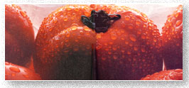
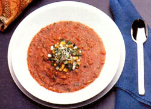

KITCHEN GARDEN
"What! You don't like tomatoes?" That response-along with a feeling of pity for the man's misguided tastebuds-is the typical reaction one of our editors receives when he reveals his aversion to this all-time favorite vegetable. For the majority of us-especially those who garden-tomatoes are one of life's great treats. Along about January, we begin to feel sadly deprived of those rich, red, juicy, vine-ripened fruits that make the hard, tasteless, mealy-textured, store-bought versions seem like artificial food made in a plastic factory.
Tomatoes (Lycopersicon esculentum) have been known over the years as pomidoros (golden apples), as love apples (from an early botanical name, Poma amoris) and, when they were thought to be poisonous and disease-causing, as "cancer apples." Spanish priests, who were the earliest European tomato eaters, called them esculentum (edible). Even so, until 1820, when Colonel Robert Gibbon Johnson ate the bright red fruit on the front steps of the Salem, New Jersey, courthouse to prove tomatoes weren't poisonous, this member of the nightshade family was usually grown in the U.S. as an ornamental.
In those days, however, tomatoes weren't anything like the luscious ones we enjoy today. A major improvement came in 1870 when Alexander Livingston of Ohio bred a plant he named "Paragon," which produced a round, smooth fruit much more succulent than its wild kin. Now, this tropical import (which gained its common name tomatl on its way through Mexico) comes in hundreds of varieties developed to suit various climates and needs and to resist a number of diseases.
Today we have yellow, red, orange and pink tomatoes that range from cherry size to the huge and tasty beefsteaks. There are tomatoes designed especially to be sliced, canned, juiced, stuffed or-for winter consumption-shipped.
If you want to experiment with a wide variety of tomatoes, you'll just about have to grow your plants from seed. Most of the commercially grown transplants will be the popular, more disease-resistant hybrids, such as the Ultra Girl VFN Hybrid (early), Hastings' Hasty Boy VF Hybrid (early), the renowned Burpee's Big Boy, the even bettertasting, if smaller-fruited, Big Girl and Ball Seed Company's Better Boy. (The latter three will take 70 to 80 days-from transplants-to mature, while the earlybearing plants produce fruit in about 68 days.) Other short-season varieties are Cold Set, Fordhook Hybrid and Sub-Arctic. Marglobe and Rutgers are good main crop varieties, as are Earl May's large and firm Red Heart, Agway's tall and productive Roadside Red and the long-bearing Supersonic from Harris. Doublerich is extra-full of vitamin C and Caro-Red has a high content of vitamin A.
For a large, smooth, golden-skinned, very tasty tomato, you can't go wrong with the classic Yellow Ponderosa (85 days) sold by a number of seed companies.
If your imagination runs to beefsteak tomatoes, which weigh around two pounds as compared to one-pound Big Girls and Better Boys, look for Beefmaster VFN Hybrid, Tom Boy, Supersteak Hybrid VFN and Ponderosa.
Roma VF, San Marzano and Veeroma VF-pear-shaped, thick-skinned and nearly seedless-are favorites for cooking, canning and juicing and take less than 80 days to mature. A large pear-shaped tomato, Slumac VFN from Sluis and Groot, makes delicious juice.
For cherry-type tomatoes, try Presto, Pixie Hybrid, Small Red Cherry, Sweet 100 or the delicious Cherry Grande. And if you want to eat homegrown tomatoes in December, Burpee's Long Keeper will withstand being refrigerated for six to 12 weeks.
Though seeds can be sown directly in the ground in some sections of the South, this tropical plant will get off to a better start if you provide warm and humid conditions for your seedlings. (A sunny, south-facing window is fine.) Plant seeds six to eight weeks before the last frost and plan to transplant the seedlings outside when the soil is warm (at least 60°F). Any slight frost can harm young plants, and nighttime temperatures below 55°F will prevent the fruit from "setting" on the blossoms. (If the weather fools you, cover the young plants with inverted baskets or paper bags on cold nights.)
Place the seeds about 1" apart and 1/4" deep in flats. (The germination rate should be at least 75%, and unused seed can be stored for four years.) Use sterile soil to prevent damping of-a fungal disease that rots the base of the seedlings. Buy the soil commercially or pasteurize potting material in a slow oven for a couple of hours. Mix this half and half with perlite or vermiculite. Tomato babies also need adequate drainage and sunshine, proper spacing for good ventila tion, regular waterings and occasional feedings of weak manure tea or fish emulsion. Turn the flats daily so the plants will grow straight, and cull out any weak or sickly looking infants. Let the healthy youngsters grow slowly at temperatures no higher than 70°F, so they won't suffer shock when set outdoors. In about two weeks, when the second set of leaves appears (the first "true" leaves), transplant to roomier flats or individual pots. Give the seedlings more sunshine and a little less water. When the weather warms, expose them to the outside world gradually for longer and longer periods of time, and-a few days before they're to be transplanted into their permanent home-stop watering them.
Unless you live in a very hot climate, give tomatoes your sunniest garden spot-and, again, destroy any that aren't sturdy and deep green, because such weaklings may harbor pests or diseases. Provide a soil that's rich in humus, and dig compost in deeply for the tomatoes' long roots. Go lightly on well-rotted manure, because too much nitrogen will produce beautiful leaves but not much fruit. Tomatoes thrive, however, with generous helpings of bone meal and wood ashes.
If you've had trouble in the past with a disease called blossom-end rot, which causes blackened areas on the underside of some fruits, the soil lacks calcium. This can be rectified with a dose of lime or gypsum, depending on whether your soil needs to be more acid or more alkaline. (Tomatoes prefer a pH range of 6 to 7.) If you have adequate calcium in your soil, then the blossom-end rot is caused by a water shortage, which-in turn-is probably caused by irregular waterings or damaged feeder roots from careless transplanting, so handle your seedlings gently.
Make the holes larger than needed for each seedling and cover the bottom of each hole with sifted compost. Mix in a heaping teaspoon of Epsom salts, which supplies magnesium (an ingredient of chlorophyll) to produce plant vitality and productivity. Keeping the seedlings' original soil as undisturbed around the roots as possible, set them in contact with the compost, and fill in, using more compost, to the first leaves. Press the soil down firmly to get rid of air pockets, and water well.
How far apart to plant depends on what type of tomato you're growing. Tomatoes come in both determinate, or bush, varieties (12" to 18" tall and compact) or indeterminate types that will keep on growing and producing until halted by frost or disease. In the latter case, you must decided whether to stake, trellis or let your plants sprawl. If you plan to stake and prune your plants, set them 20" to 30" apart. If you let the plants sprawl on a mulch, they will need 3' to 4' of space.
Sprawling vines demand less work and often yield better, but they take up more garden space and are more susceptible to diseases. If this is your choice, prop the plants up with piled mulch to keep the tomatoes from coming in contact with the soil.
Should you intend to stake your plants, have these supports in place before transplanting, to guard against damaging the roots later. The stakes should be 5' to 7' long and driven 6" to 8" into the ground. (Staked plants produce larger but fewer fruits. These, however, usually receive more sunshine, so they may be richer in vitamin C than those from sprawling plants.) As they grow, tie the stems to the stakes at intervals using soft cloth looped in a figure-eight under the leaf nodes. (Don't tie them too tightly, or you'll strangle the plants.) You'll probably have to repeat this process two or three times during the growing season for proper support.
Trim the vines to two or three stems and cut of suckers (sprouts that grow at about a 45 ° angle between the main tomato stem and the leaf axils) to keep them from drawing too much energy from fruit production. However, a few of these suckers on the middle and top part of the plant can protect the fruit from sunscald. When the tomato vine reaches the top of the support, pinch back the top to encourage more fruit production.
One of the more expensive but best methods of support is to cage the plant with a circle of heavy-duty wire fencing about 3' in diameter and 5' to 6' high, anchored with several small stakes. Some folks grow their tomatoes between tall wire fences set on each side of the rows.
Once the tomatoes are in place, keep down the weeds with shallow hoeing. After the soil warms up, mulch with hay, leaves, corncobs, bark, plastic or newspapers to eliminate that chore and to conserve water. Tomatoes are heavy drinkers, needing at least 1" of water a week. Just remember that a deep soaking is much better than several light waterings, and avoid wetting the leaves, since damp foliage encourages diseases.
Side-dress with compost or use a "compost tea" or fish emulsion when the plants are in flower. A weekly dose of liquid seaweed also seems to increase production and reduce problems.
Perhaps the most dramatic tomato-preying pest is the tomato hornworm, a large, whitestriped, green caterpillar. Just handpick and kill, or run such pests off with sprays of red pepper juice or Bacillus thuringiensis or dustings of diatomaceous earth. However, if you find a caterpillar covered with small white egg cases, let it die from its parasites, which can spread to other hornworms in the area.
Cutworms can be countered in advance by inserting a stiff, 3" ring of cardboard (try frozen juice containers) about an inch into the soil around each tomato's stem.
Spider mites are harder to spot (they'll look like red dots on the undersides of the leaves). Hard sprays with a hose, diatomaceous earth, ladybugs, onion sprays or pyrethrum can control them if used persistently. The above remedies, as well as garlic or basil sprays, will more easily discourage tiny, white, sap-sucking aphids and black flea beetles.
Nematodes are invisible killers that attack the plant's root system, stunting growth and lowering disease resistance. (Check the roots for little knots.) To prevent this, surround the tomatoes with African or French marigolds or plant the tomatoes where you grew marigolds last year. Soils rich in organic matter are also rich in nematode parasites. Then, too, the N in a variety's VFN name means it's bred to resist nematodes, just as the V and F mean the plant is resistant to verticillium and fusarium wilts-two common tomato diseases. Using such varieties and practicing crop rotation are the only ways to prevent the wilts. If, despite this, leaves curl up, turn yellow and fall off, quickly pull up the plant and destroy it.
Early blight (dark, sunken areas on leaves just as the first fruits begin to mature) is more often seen in the New England, Atlantic and Central states, while late blight, indicated by, black, irregular, water-soaked patches, is more common on the West Coast and in certain areas of the East-and both are likely to occur during cool, rainy periods. Quickly burn such plants to avoid losing the whole crop. The only remedy-other than employing dangerous chemical toxins-is to plant blight-resistant varieties.
Finally, never smoke around your tomato plants and wash your hands if you've handled tobacco, because tomatoes-like eggplants, peppers and potatoes-are related to tobacco and are subject to the same diseases, one of which is tobacco mosaic. For that same reason, don't grow any of these members of the nightshade family near each other.
Once the crop begins to mature, check it almost every day in order to pick the fruit at its peak ripeness. Cut or gently twist the tomatoes from their stems, bracing the plant to avoid damage. Most tomatoes can survive a light frost if they're protected by mulch or covers, but at the first hint of a heavy frost, harvest all the fruit. Ripe tomatoes will keep refrigerated for quite some time, and green ones can be ripened in a warm place if direct sunlight is avoided. For slower ripening, wrap the green fruits in newspapers and place them in a dark, cool area, checking periodically for any that might have rotted.
Tomatoes are among few types of produce that are delicious canned.
Green tomatoes are tasty sliced, dipped in a flour and black pepper mixture and fried in butter or margarine. They also make a delicious relish.
If you're blessed with an abundance of ripe tomatoes, you should know they are one of the few types of produce that taste better canned than frozen. For tomatoes that are not prepared with long cooking-that is, stewed or made into sauce, juice or soup-use the following canning method approved by the U.S. Department of Agriculture. (The USDA no longer recommends the raw or cold pack method.)
Using only firm, ripe tomatoes, loosen the skins by dipping the fruit into boiling water for 30 seconds, then plunging them into cold water. Slip the skins off, cut out the stem ends and quarter the tomatoes. Bring them to a boil, stirring to keep them from sticking to the pot. If you wish, add about a teaspoon of salt per quart. Pour the boiling-hot fruit into clean glass jars, leaving a 1/2" space at the tops. If the tomatoes are very ripe or are bruised, add 1/2 teaspoon citric acid or 2 tablespoons lemon juice per quart. Wipe the jars with a damp cloth and screw the lids on tightly. Place the jars into a large pot or canner containing boiling water, and add more boiling water if necessary to cover the lids an inch or so. (Pour it around, not directly on, the jars.) Boil gently and steadily 35 minutes for pints and 45 minutes for quarts, adding more boiling water if needed to keep the jars covered. Remove them immediately when the time is up. Check each lid to see that it has sealed properly (directions should come with the lids); if any have not, refrigerate those jars and use the contents in a week or two.
To freeze the fruit, use small, firm, ripe tomatoes, and place them in 3" of boiling water until the skins break. Remove the tomatoes, then peel and core them. When cooled to room temperature, refrigerate them until cold, pack in rigid containers, and freeze.
Because of their high acid content, tomatoes are good candidates for drying. For example, you can slice tomatoes very thin, place them on a cloth-covered cookie sheet, and dry in a low (150°F) oven, turning frequently to prevent sticking. Or blanch them, slip of the skins, process the tomatoes in a blender, and pour the mixture onto trays. When dry, break the mass into pieces, grind them into powder, and store it in jars.
To reconstitute dried tomatoes, place each slice on a separate plate and sprinkle it generously with water, but not so much that it floats. Let the slices soak for 20 minutes, then fry them, use them in sandwiches or cut them into small pieces for flavoring such dishes as stew, meat loaf, pizza and dips. Use the powder to make tomato paste, sauce, ketchup, juice and soup.
Cream of tomato soup has long been a nourishing winter warmer, but in sunny Spain, a cold tomato-based soup is an old and tasty favorite.
1 large green pepper, seeded and chopped
2 cucumbers, peeled and chopped
8 ripe tomatoes, peeled and quartered
1 cup celery, chopped
1 clove garlic, peeled
1 small, mild onion, peeled and chopped
1/4-ounce can green chilies
1/4 cup olive oil
1/4 cup wine vinegar
2 teaspoons W Worcestershire sauce
Salt to taste (usually 2 teaspoons)
1 1/2 cups cold tomato juice
Process the above ingredients in a blender until smooth. (Divide the ingredients equally if two separate blendings are necessary.) Pour into a soup tureen and chill. Add two or three ice cubes just before serving. Garnish generously with finely chopped tomatoes, peppers and cucumbers. Serves 8.
Per serving: 116 cal., 2 g pro., 13g carbo., 7 g fat, 692 mg sodium with 2 tsp salt added (203 mg sodium with no added salt). U.S. RDA: 48% vit. A, 96% vit. C.
|
 ? PHILIPPE- LOUIS HOUZE |
 ? GIORGIO PALMISANO |
|